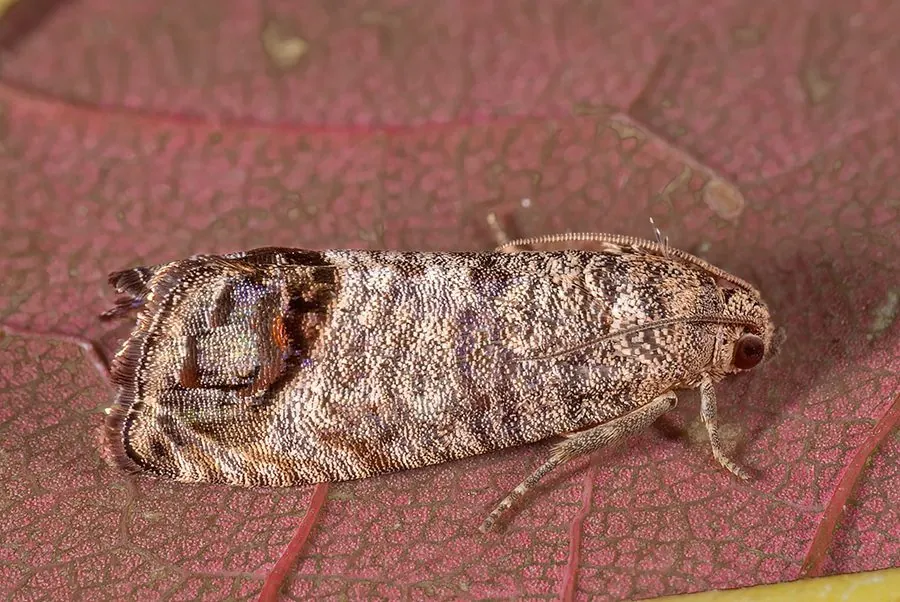

昆虫 · 动物界
苹果蠹蛾 Cydia pomonella

幼虫蛀入苹果、梨果心取食的灰褐色小蛾，是世界性检疫害虫，中国西北果区重点防控对象。
- 分类
- 门节肢动物门纲昆虫纲目鳞翅目科卷蛾科属小卷蛾属
- 栖息环境
- 苹果园、梨园、核桃园及贮果场所
- 地理分布
- 原产欧洲，现遍布世界温带果区；中国新疆、甘肃、宁夏等地
- 保护级别
- 国际检疫性有害生物，需持续监测与防控
物种志
苹果蠹蛾的成虫翅展约二厘米，体灰褐色，前翅臀角处有一块深褐色的马蹄形斑，斑内缀有铜色横纹，翅面布满细密的波状纹，停歇时两翅合拢如一枚小帐篷。幼虫初孵时白色，取食后变为粉红色，头部深褐。雌蛾把卵单产在果实萼洼或叶面上，幼虫孵化后啃食果皮，随即蛀入果心。
它原产欧洲，随果树苗木传播到世界各地，中国新疆、甘肃、宁夏等果区发生较重，主要危害苹果、梨、沙果和核桃。幼虫在果内取食种子和果肉，一个果实通常只容一条幼虫，蛀孔处堆积红褐色虫粪，果实常提前脱落。幼虫脱果后爬至树皮裂缝或土壤表层结茧越冬，一年发生一至三代。它是国际公认的检疫性有害生物，防控依靠迷向丝、性诱剂和果实套袋。
形态与习性
- 翅展约二厘米，体灰褐色
- 翅斑臀角处深褐马蹄形斑，内有铜色横纹
- 蛀果幼虫蛀入果心取食种子与果肉
- 危害特征蛀孔堆红褐色虫粪，果实提前脱落
- 越冬老熟幼虫在树皮裂缝或土表结茧越冬
- 检疫国际检疫性有害生物，果品调运受检
趣味知识
- 一条幼虫通常独占一个苹果，从萼洼钻进去，把果心吃空再钻出来。
- 它是国际检疫对象，苹果出口时若查出此虫，整批货物都可能被退回。
- 果园里挂上性诱剂迷向丝，能让雄蛾找不到雌蛾，从而大幅减少下一代。